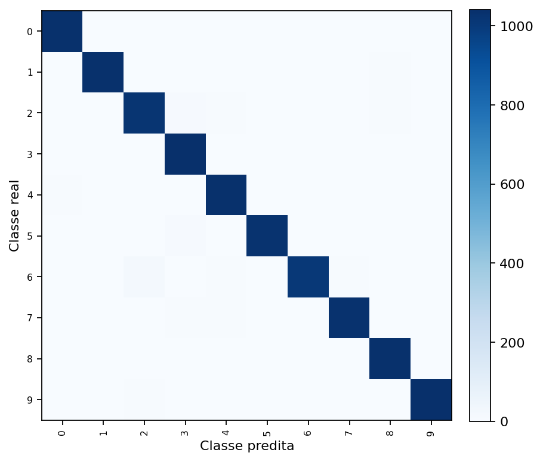
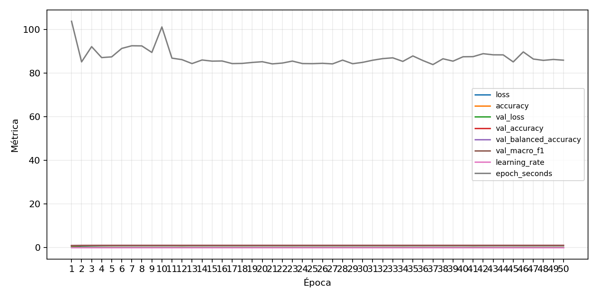

| n_samples | 10500 |
|---|---|
| loss | 0.08436797559261322 |
| accuracy | 0.9812380952380952 |
| balanced_accuracy | 0.9812380952380954 |
| macro_f1 | 0.9812333478392794 |


| Índice | Classe | Suporte | Precisão | Recall | F1 |
|---|---|---|---|---|---|
| 0 | 0 | 1050 | 0.9857278782112274 | 0.9866666666666667 | 0.9861970490242742 |
| 1 | 1 | 1050 | 0.9819563152896487 | 0.9847619047619047 | 0.983357108892059 |
| 2 | 2 | 1050 | 0.9640831758034026 | 0.9714285714285714 | 0.9677419354838709 |
| 3 | 3 | 1050 | 0.9720149253731343 | 0.9923809523809524 | 0.9820923656927426 |
| 4 | 4 | 1050 | 0.9736346516007532 | 0.9847619047619047 | 0.9791666666666666 |
| 5 | 5 | 1050 | 0.9884504331087585 | 0.9780952380952381 | 0.9832455720440403 |
| 6 | 6 | 1050 | 0.9843597262952102 | 0.959047619047619 | 0.9715388326097444 |
| 7 | 7 | 1050 | 0.9865900383141762 | 0.9809523809523809 | 0.9837631327602675 |
| 8 | 8 | 1050 | 0.9847764034253093 | 0.9857142857142858 | 0.9852451213707759 |
| 9 | 9 | 1050 | 0.9914040114613181 | 0.9885714285714285 | 0.9899856938483547 |
{"adapter":"kmnist","balance_mode":"all_raw","class_names":["0","1","2","3","4","5","6","7","8","9"],"dataset":"kmnist","dataset_options":{},"dataset_root":"/home/msduda/datasets-tcc/kmnist","native_channels":1,"normalization":"unit_interval","num_classes":10,"protocol":{"checkpoint_monitor":"val_macro_f1","dtype_policy":"mixed_float16","early_stopping":{"patience":50,"restore_best_weights":true},"evaluation_augmentation":false,"input_channels":"native","optimizer":"Adam","pretrained_weights":false,"reduce_lr_on_plateau":{"factor":0.3,"min_lr":1e-07,"patience":50},"resize":"proportional_padding","test_time_augmentation":false,"training_from_scratch":true},"seed":42,"source_fingerprint":"8928d478d8d23938a73b4f4a92c407bf3d74beff1e0e67e3644d6ecdc30cf828","source_manifest":{"class_names":["0","1","2","3","4","5","6","7","8","9"],"joined_samples":70000,"metadata":{"layout":"kmnist-component-npz"},"name":"kmnist","native_channels":1,"source_path":"/home/msduda/datasets-tcc/kmnist","splits":{"test":10000,"train":60000},"target_size":64},"target_size":64,"test_fraction":0.15,"train_fraction":0.7,"training":{"augmentation":{"brightness_delta":0.0,"contrast_lower":1.0,"contrast_upper":1.0,"cutout_max_frac":0.0,"cutout_prob":0.0,"flip_lr":false,"noise_std":0.0,"translate_frac":0.0,"zoom_max":1.0,"zoom_min":1.0},"batch_size":64,"default_image_size":64,"dtype_policy":"mixed_float16","early_stopping_patience":50,"extra_fraction":0.0,"image_size_overrides":{"gtsrb":128},"keras_verbose":1,"learning_rate":0.0003,"max_epochs":50,"preprocess_cache_max_mib":0,"reduce_lr_factor":0.3,"reduce_lr_min_lr":1e-07,"reduce_lr_patience":50,"shuffle_buffer_max_mib":0},"validation_fraction":0.15}
{"epochs_completed":50,"epochs_recorded":50,"evaluation_seconds":29.192905009999777,"fit_seconds_current_attempt":4248.3781104340005,"max_epoch_seconds":103.76339717799999,"max_epochs":50,"mean_epoch_seconds":86.25187324239026,"mean_train_examples_per_second":568.6163260188692,"median_train_examples_per_second":571.2877295761174,"min_epoch_seconds":83.91671356999996,"selected_checkpoint":"/mnt/e/tcc-benchmark/outputs/kmnist-alldata-noaug-batch-sweep-2026-08-06/batch-064/kmnist/runs/kmnist__unit_interval__all_raw__seed-42/checkpoints/best.keras","total_seconds":3536.3268029380006,"training_seconds":3536.3268029380006,"wall_seconds_current_attempt":4281.739390835}
{"elapsed_seconds":4281.818134568,"event_counts":{"data_preparation_end":1,"data_preparation_start":1,"epoch_end":41,"evaluation_end":1,"evaluation_start":1,"fit_end":1,"fit_start":1,"periodic":844,"run_completed":1,"train_start":1},"generated_at":"2026-08-07T03:50:01.481+00:00","gpu_backend":"pynvml","interval_seconds":5.0,"metrics":{"cpu_percent":{"count":893,"max":18.6,"mean":12.288465845464726,"min":0.0,"p50":11.3,"p95":16.4},"disk_data_free_bytes":{"count":893,"max":998270091264.0,"mean":998270038543.4803,"min":998261682176.0,"p50":998270091264.0,"p95":998270091264.0},"disk_data_percent":{"count":893,"max":2.7,"mean":2.7000000000000006,"min":2.7,"p50":2.7,"p95":2.7},"disk_data_total_bytes":{"count":893,"max":1081101176832.0,"mean":1081101176832.0,"min":1081101176832.0,"p50":1081101176832.0,"p95":1081101176832.0},"disk_data_used_bytes":{"count":893,"max":27847139328.0,"mean":27838782960.519596,"min":27838730240.0,"p50":27838730240.0,"p95":27838742528.0},"disk_output_free_bytes":{"count":893,"max":207401099264.0,"mean":207400566128.0896,"min":207399817216.0,"p50":207400751104.0,"p95":207401062400.0},"disk_output_percent":{"count":893,"max":79.3,"mean":79.3,"min":79.3,"p50":79.3,"p95":79.3},"disk_output_total_bytes":{"count":893,"max":1000186310656.0,"mean":1000186310656.0,"min":1000186310656.0,"p50":1000186310656.0,"p95":1000186310656.0},"disk_output_used_bytes":{"count":893,"max":792786493440.0,"mean":792785744527.9104,"min":792785211392.0,"p50":792785559552.0,"p95":792786396774.4},"elapsed_seconds":{"count":893,"max":4281.734413,"mean":2143.2751112642777,"min":0.031667,"p50":2144.066994,"p95":4082.5224697999997},"gpu_count":{"count":893,"max":1.0,"mean":1.0,"min":1.0,"p50":1.0,"p95":1.0},"gpu_memory_percent":{"count":893,"max":36.49392127990723,"mean":33.51181132796096,"min":30.504894256591797,"p50":33.708763122558594,"p95":34.08150672912598},"gpu_memory_total_bytes":{"count":893,"max":8589934592.0,"mean":8589934592.0,"min":8589934592.0,"p50":8589934592.0,"p95":8589934592.0},"gpu_memory_used_bytes":{"count":893,"max":3134803968.0,"mean":2878642673.6662936,"min":2620350464.0,"p50":2895560704.0,"p95":2927579136.0},"gpu_temperature_c":{"count":893,"max":50.0,"mean":42.56662933930571,"min":39.0,"p50":42.0,"p95":47.0},"gpu_utilization_percent":{"count":893,"max":98.0,"mean":28.516237402015676,"min":1.0,"p50":33.0,"p95":42.0},"process_cpu_percent":{"count":893,"max":214.7,"mean":158.34400895856663,"min":0.0,"p50":145.2,"p95":211.0},"process_read_bytes":{"count":893,"max":233107456.0,"mean":230631889.5587906,"min":8134656.0,"p50":232783872.0,"p95":232783872.0},"process_rss_bytes":{"count":893,"max":4041441280.0,"mean":3691243192.0447927,"min":1027108864.0,"p50":3690450944.0,"p95":4016054272.0},"process_vms_bytes":{"count":893,"max":50063192064.0,"mean":49565948222.78163,"min":39580557312.0,"p50":49592381440.0,"p95":49981038592.0},"process_write_bytes":{"count":893,"max":1392640.0,"mean":1378833.7737961926,"min":4096.0,"p50":1392640.0,"p95":1392640.0},"ram_available_bytes":{"count":893,"max":15536611328.0,"mean":13034507104.609182,"min":12677627904.0,"p50":13038698496.0,"p95":13558670950.4},"ram_percent":{"count":893,"max":23.7,"mean":21.566741321388577,"min":6.5,"p50":21.5,"p95":23.5},"ram_total_bytes":{"count":893,"max":16619077632.0,"mean":16619077632.0,"min":16619077632.0,"p50":16619077632.0,"p95":16619077632.0},"ram_used_bytes":{"count":893,"max":3941449728.0,"mean":3584570527.3908176,"min":1082466304.0,"p50":3580379136.0,"p95":3911781580.8}},"sample_count":893,"schema_version":1}